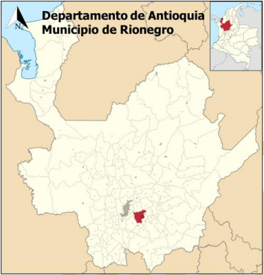
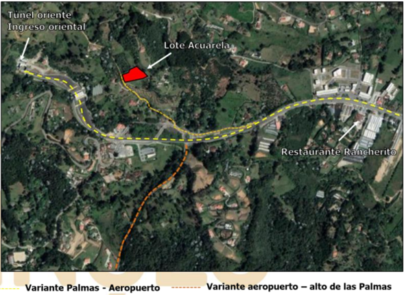

El lugar de donde tomamos nuestra muestra pertenece a el municipio de Rionegro específicamente la vereda de Sajonia. Para comenzar, el municipio de Rionegro es mostrado en el mapa geográfico de CORNARE (2012), con dos macrounidades geomorfológicas que son el escarpe y la erosión. La erosión representa un 76% en la superficie del municipio, este es conformado por el saprolito de rocas ígneas. Este genera un relieve que se puede describir como colinado, generalmente son pendientes medias-bajas. El otro 24% del terreno del municipio es representado por la superficie escarpada y es conformado por un saprolito de roca metamórfica. Este tiene tendencias a tener un relieve vertiente.
Esta zona es conocida como la vereda de Sajonia. Este sector tiene como principal uso la parte residencial. Gran parte de esta zona está poblada por múltiples obras civiles destinadas a la residencia. Específicamente, el lugar en donde tomamos nuestra muestra es un suelo antrópico ya que este suelo es un aplanamiento que se le realizo a un terreno en donde se espera en un futuro hacer la construcción de una casa, es importante detallar que el aplanamiento fue realizado hace unos 30 o 40 años, esto explica la razón del crecimiento de materia organica. Además, este suelo tuvo un periodo de tiempo en el que tenía una pequeña plantación de aguacates, pero esta tuvo que terminar ya que el suelo de esta zona no es muy fértil como para sostener algo así. La mayor parte de la vegetación que se puede ver alrededor del sector son arboles grandes, específicamente pinos. Cabe detallar en último lugar que cerca existe una zona protegida ya que hay una gran cantidad de bambú.
El terreno muestra ser muy estable, esto lo pudimos ver gracias a los arboles que hay en sus alrededores. Estos son de un gran tamaño y están creciendo de una manera vertical y relativamente uniformes. Se sabe por conocimiento de la población de alrededor que desde que se hizo este aplanamiento, el terreno no ha tenido ningún tipo de movimiento de tierra significativo, lo cual es otro indicio de esta estabilidad. De igual manera, cabe resaltar, que si se presentan pequeños movimientos de tierra. Estos movimientos no nos dan ningún indicio contrario a lo que se mencionó de la estabilidad anteriormente, pero si nos deja saber que, por cambios en las condiciones climatológicas como vientos y lluvia, puede generar estos pequeños deslizamientos. Como se hizo este aplanamiento hay zonas del terreno con pendientes mucho mayores a 5% y en lugares como estos se pueden apreciar pequeñas grietas que nos dejan saber que si podría haber un tipo de peligro si se pensase construir en estas zonas.
En la zona se presentan varios tipos de suelo siendo el residencial y la regulación hídrica las principales. Gracias a el mapa presentado por el Modelo Geográfico de Rionegro pudimos identificar las zonas alrededor de donde tomamos nuestra muestra e identificamos que el uso de esto suelos de esta zona es para residencia, la regulación hídrica, protección forestal y se podría decir que tiene un pequeño porcentaje de industrial y centro poblado en desarrollo.
Colombia es aproximadamente un 40% montañoso. Esto debido principalmente a sus tres cordilleras que se extienden a lo largo de todo el país en la zona occidental, mientras que en la región oriental se encuentran los llanos con poco relieve. El relieve colombiano se configuró en la era secundaria, cuando los procesos geológicos de plegamiento y subducción llevaron a que las aguas del océano se retiraran, permitiendo el surgimiento de las cordilleras Occidental y Central. En la era terciaria surgió la cordillera Oriental y los sistemas independientes.
La cordillera de los Andes es el sistema de cordilleras más extenso del mundo, esta bordea el continente en la costa Pacífica y en Colombia la atraviesa con sus tres ramificaciones, la cordillera se formó al final de la era Mesozoica, a finales del Cretácico tardío, debido al movimiento de convergencia de la placa de Nazca debajo de la placa sudamericana. Los principales agentes erosivos son los movimientos sísmicos y la actividad volcánica, en la morfología actual se encuentran elevadas cordilleras, junto con extensos altiplanos y profundos valles longitudinales paralelos a los grandes ejes montañosos. Los valles transversales son escasos, salvo en los Andes argentinos-chilenos. La cordillera central del departamento de Antioquía se encuentra conformada por distintos tipos de rocas, en donde se pueden remarcar: las rocas metamórficas del Paleozoico constituidas por las anfibolitas de Medellín, metasedimentos, las rocas ígneas del Mesozoico, constituidas por el Batolito Antioqueño, metavulcanitas, las cuales provienen de un complejo polimetamorfico de la Edad Precámbrica, Paleozoica y Mezonica y las rocas sedimentarias del Cenozoico, generadas por depósitos aluviales.
También es de mencionar que esta franja de la cordillera central es limitada tectónicamente. Ya que está, esta limitando por el sistema de fallas de Romeral en su parte occidental, por el oriente gracias a fallas transcurrentes, las cuales son el tipo de fallas que se producen gracias al acomodamiento horizontal de bloques adyacentes.
En Colombia, las placas tectónicas producen fallas en dirección SE-NW. Un ejemplo de ello ocurre en la falla Romeral en el departamento del Cauca, específicamente en el Patía-Soapaga. También se presentan fallas de esta clase en algunas zonas de cordillera Oriental. Existe otro tipo de fallas conocidas como de rumbo, como la falla de Bucaramanga-Santa Marta, la cual desplazó varios kilómetros la Sierra Nevada de Santa Marta en sentido noreste. En términos geológicos, la cordillera Central fue la primera cadena montañosa que surgió en Colombia, la segunda fue la Occidental y posteriormente emergió la Oriental, en la cual se han encontrado restos de fósiles en zonas cercanas a Villa de Leyva y el Altiplano cundiboyacense.
El departamento de Antioquia está localizado en la zona noroccidental de Colombia, zona atravesada por las cordilleras occidental y central, y siendo limitado por el río Atrato al oeste y el Magdalena al este, las principales fallas de Antioquia son la falla Abriaquí-Frontino, la falla de Sabanalarga, la del Romeral, la falla Santa Rita y la Palestina, Antioquia se encuentra en zonas entre medio y alto riesgo sismico debido a su ubicación cercana a la falla de San Andrés.
La principal formación geológica propiamente del departamento es el batolito antioqueño, dado que es uno de los cuerpos plutónicos de mayor extensión de la cordillera Central , un afloramiento intrusivo extenso de granito compuesto principalmente por granodiorita y en menor medida de tonalita, sobre este batolito se encuentra la ciudad de Medellín y municipios cercanos, El batolito tiene una forma trapezoidal y su mayor longitud se encuentra entre el Noroccidente-suroeste, se caracteriza por su homogeneidad litológica y poca variabilidad petroquímica, Actualmente las rocas del Batolito Antioqueño se meteorizan en un medio ecuatorial húmedo que favorece la acción de los agentes meteorizantes sobre un macizo rocoso fracturado, lo cual ha dado origen a saprolitos profundos. La constitución geológica general de toda la zona de Rionegro se caracteriza por sus rocas metamórficas, las cuales provienen de las rocas ígneas del Batolito Antioqueño. A parte de estas, se generaron a lo largo de los años depósitos aluviales y aluviotorrenciales y capas de ceniza volcánica.
En la region de Antioquia estamos ubicados en el Gneis Milonítico de Sajonía compuesto principalmente por feldespato, cuarzo, y biotita, los cuales al ser alterados adquieren colores rojizos, blancos y amarillos, es un afloramiento de poca extensión ubicada en la vía Palmas-Aeropuerto, este tiene una falla principal cercana a la zona de la toma de la muestra en el contacto con la dunita de Medellín.
Fuente: EstudioDeSuelosEIA (Sabogal y Garcés, 2016)
Rionegro es un municipio de Antioquía ubicado en el oriente del departamento, específicamente ubicado en el Valle de San Nicolas, a unos 30 o 40 minutos de Medellín, la capital antioqueña. El municipio queda ubicado en la cordillera central de Antioquía. A partir de las divisiones que se tiene sobre el oriente antioqueño que son: Unidad Altiplanos, Unidad Embalses, Unidad Bosques y Unidad Paramo, Rionegro se encuentra en la división de Unidad Altiplanos. Esta consiste a la articulación que se plantea al Valle de San Nicolas con el Valle de Aburra. Esto se debe a la búsqueda de desarrollo por parte de ambos sectores, también un acercamiento a la capital en búsqueda de mayor proximidad a recursos naturales, paisajes y oferta en infraestructura comercial y de vivienda.
La fuente de agua más importante es el rio por el cual se le da nombre al municipio, el Rio Negro. Este divide el valle en 2, lo que es el Valle de Llanogrande y lo que es el Valle de San Nicolas. El rio nace al sur de la región en el Cerro la Vaca corre en dirección noreste y tiene más de 9 quebradas que lo alimentan, como: la Pereira, el Tablazo, La Mosca, entre otras. Rio Negro es el de los principales productores de agua para el Valle de San Nicolas, y no solo en el valle, este rio abastece un 30% del agua que llega a Medellín y el área metropolitana.
Además de este rio, varias de las quebradas que lo abastecen son de mucha importancia también para el Municipio. Una de estas en la quebrada La Pereira, ella hace parte de la cuenca alta del río Negro Nare, la cual representa alrededor de un 19% del territorio de Rionegro. La quebrada que mas cerca estaría a la zona en donde sacamos nuestra muestra sería la quebrada Garrido, esta desemboca en Rio Negro en sus partes más superiores, muy al norte del municipio.
Fuente: estudio de Amenazas y riesgos, unidad de análisis (rionegro.gov.co)
El sector de Rionegro es una zona con una precipitación media alta, en donde en el mes tiene una gran cantidad de días con lluvia. Es un sector con una gran riqueza hídrica. pues la muestra fue tomada en febrero,se realizó la búsqueda del Boletín Climatológico del IDEAM en este mismo mes. A partir de los datos que se presentan en el documento pudimos analizar varios datos que se muestran y tener de seguridad de unos datos mucho más precisos ya que fue un estudio realizado en el mismo tiempo que obtuvimos la muestra de suelo y con esto podemos verificar la suposición que ya teníamos cuando obtuvimos la muestra.
Otro de los datos que se analizó fue el mapa temático de Número de Días con Lluvia. Este mapa se tomó en cuenta dado que los dos días antes de que se tomara la muestra fueron muy lluvioso, fueron un día en los cuales llovió todo el día y noche, horas antes de tomarla también había una pequeña lluvia. Esto da a entender que es posible que la muestra que se obtuvo tenga una humedad alta y una saturación cercana al 100%. Esto se nota también en el terreno, puesto que en el momento de la toma de la muestra se encontraron múltiples charcos y zonas demasiado húmedas que en su superficie orgánica se sentían pantanosas. El mapa muestra exactamente lo que se describe anteriormente; el mes de septiembre tuvo una cantidad de días lluviosos entre 16 y 20 días lo cual es más de la mitad del mes y generaría este tipo de situaciones: suelo húmedo, charcos en la superficie y suelos que pudiesen llegar al 100% de saturación.
El mapa temático de Temperatura Media deja saber que durante el mes de febrero la temperatura de la región estuvo entre 12 a 16 grados centígrados. Por lo que ya se conocía la zona es un sector con una temperatura medio baja y tal cómo que se analizó con el mapa de días lluviosos, también es notable ver que es una región muy susceptible a las lluvias.
Esta muestra está ubicada en el país de Colombia con un clima principalmente tropical, aquí nos ubicamos en Rionegro, Antioquia. En Rionegro, los veranos son cómodos, los inviernos son cortos, aunque generalmente el clima es nublado y húmedo, esto especialmente en la zona donde fue tomada la muestra.
La zona en especifica donde fue tomada la muestra fue en la verdad Sajonia después de dos días en los que llovió fuertemente, en esta vereda la ubicación es el sector El Colombiano; la vía por la cual se tomó la muestra también es conocida como “la roba peajes”, ya que esta permite cruzar desde la glorieta de Sajonia, o la glorieta del aeropuerto José María Córdoba, hasta Santa Elena sin pagar.
Esta toma de muestra queda cerca a la salida del túnel de oriente en dirección al valle de San Nicolás en el lote acuarela, localizado a 0.40 km sobre el costado derecho de la vía variante las Palmas – Santa Elena. La muestra para este estudio de suelos se extraerá en los alrededores de una propiedad privada que consta de una casa construida la cual está a aproximadamente 100 metros de donde se tomó la muestra, y esta residencia se encuentra a 200-300 metros del inicio de la vía destapada. Las coordenadas del lugar son:
6.180070850103472, -75.45011931231667
La manera de llegar en transporte público ya sea desde Medellín o desde el Rionegro es tomando un bus de Medellín-Rionegro ruta Santa Elena, con acopio en Medellín en la terminal Norte y en Rionegro en la terminal de buses de Medellín, bien puede ser en los de Rápido Medellín (rojos), Transportes chachafruto (azules) o la flota Rionegro (Verdes). de aquí se bajan en la glorieta Sajonia y suben a pie el tramo faltante.
Además podemos llegar en carro particular, en el video se observa cómo llegar desde el aeropuerto internacional JMC, siendo este el sitio importante más cercano al lugar de la toma de muestra, saliendo desde el aeropuerto en la glorieta tomamos la segunda salida, en dirección al túnel de oriente, en esta salida conservamos la derecha para salir por la variante Palmas – Santa Helena, donde en la glorieta Sajonia tomamos la primera salida rumbo a Santa Helena pero nos desviamos a la derecha en la entrada destapada conocida cómo “la roba peajes” que dirige a la vereda Sajonia